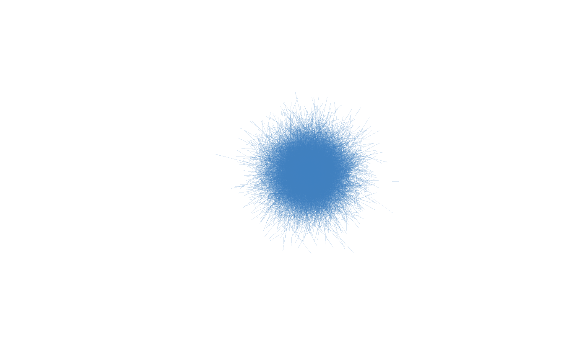

Scatter rgbwt with lines
rgbwt_lines.RmdColorize data with custom color
rgbwt <- scatter_lines_rgbwt(lines, RGBA= c(64,128,192,50), xlim=c(-5,5), ylim=c(-5,5))
raster <- rgba_int_to_raster(rgbwt_to_rgba_int(rgbwt))
plot(raster, interpolate=F)
Apply some kernels on colorized data
blurred_rgbwt <- apply_kernel_rgbwt(rgbwt)
raster <- rgba_int_to_raster(rgbwt_to_rgba_int(blurred_rgbwt))
plot(raster, interpolate=F)
gauss_blurred_rgbwt <- apply_kernel_rgbwt(rgbwt, filter="gauss")
gauss_raster <- rgba_int_to_raster(rgbwt_to_rgba_int(gauss_blurred_rgbwt))
plot(gauss_raster, interpolate=F)